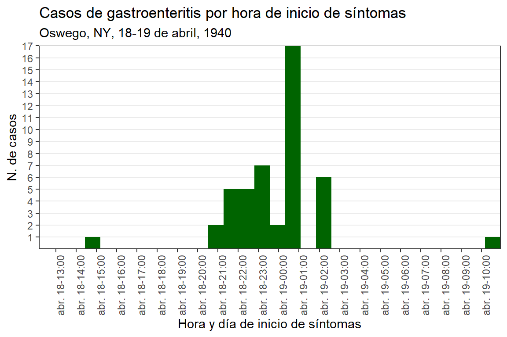
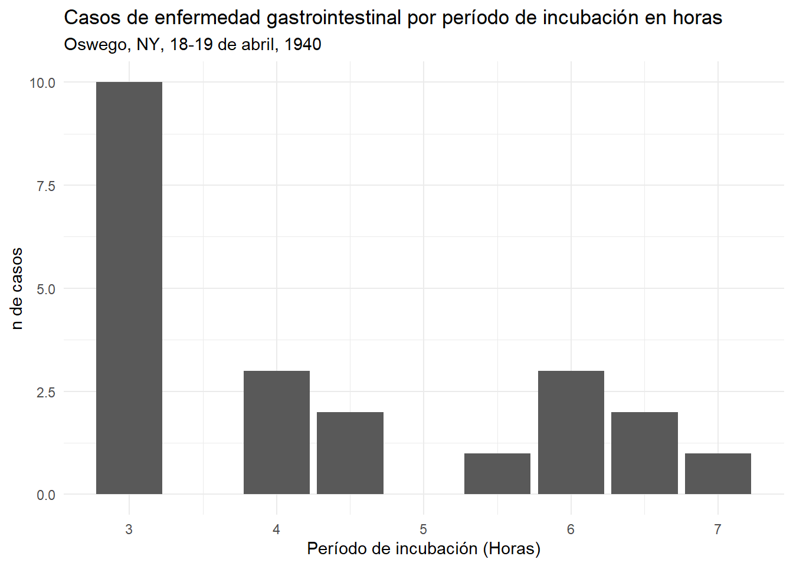

ebola_linelist %>%
filter(
age > 25,
district == "Bolo"
)3 Oswego (ES)
Overview
Case study characteristics
| Name | Oswego |
| Tool | R |
| Language | Spanish/Español |
| Location | United States |
| Scale | Local |
| Diseases | Gastrointestinal |
| Keywords | Gastrointestinal;Outbreak investigation |
| Technical complexity | Intermidiate |
| Methodolocial complexity | Intermidiate |
Authorship
Original authors: Centre for Disease Prevention and Control (CDC)
Data source: Epi Info, version 3.5.4 (CDC)
Adapted to R by: Leonel Lerebours Nadal y Alberto Mateo Urdiales
Instructions
Getting Help
There are several ways to get help:
- Look for the “hints” and solutions (see below)
- Post a question in Applied Epi Community with reference to this case study
Hints and Solutions
Here is what the “helpers” look like:
Click to read a hint
Here you will see a helpful hint!
Click to see a solution (try it yourself first!)
Here is more explanation about why the solution works.
Posting a question in the Community Forum
… description here about posting in Community… TO BE COMPLETED BY APPLIED EPI
Icons
You will see these icons throughout the exercises:
| Icon | Meaning |
|---|---|
| Observe | |
| Alert! | |
| An informative note | |
| Time for you to code! | |
| Change to another window | |
| Remember this for later |
Terms of use
This case study has been adapted from an existing tutorial on Epi Info created by the Centre for Disease Prevention and Control (CDC). Epi Info™ is a trademark of CDC. Epi Info™ programs are provided in the public domain to promote public health. Programs might be freely translated, copied, or distributed. No warranty is made or implied for use of the software for any particular purpose.
 Applied Epi Incorporated, 2022
Applied Epi Incorporated, 2022
This work is licensed by Applied Epi Incorporated under a Creative Commons Attribution-NonCommercial-ShareAlike 4.0 International License.
Please email contact@appliedepi.org with questions about the use of these materials for academic courses and epidemiologist training programs.
Feedback & suggestions
- You can write feedback and suggestions on this case study at the GitHub issues page
- Alternatively email us at: contact@appliedepi.org
Version 1
16 November 2023
Disclaimer
Esto es un estudio de caso diseñado por el Centre for Disease Prevention and Control (CDC) como tutorial de Epi Info. Puede consultar más detalles en este Enlace
Revisions
| Date | Changes made | Version |
|---|---|---|
| 16 November | Adapted to template | 1 |
Guía
Objetivos de este estudio de caso
Los objetivos de este estudio de caso son:
- Entender los diferentes pasos en la investigación de un brote de casos de enfermedad gastrointestinal
- Adquirir confianza en el manejo de datos de un listado nominal con el software estadístico R
- Adquirir experience en el análisis descriptivo en R, particularmente curvas epidémicas
- Adquirir experience construyendo tablas 2x2 con exposición y desenlace que nos permitan calcular medidas de asociación
- Aplicar los conocimientos adquiridos a posibles actividades de control y prevención de brotes infecciosos de origen alimentario
Conocimientos previos asumidos
En este estudio de caso se asume un conocimiento básico de los principios fundamental de la investigación epidemiológica de brotes gastrointestinales. Se asume también un conocimiento básico de R.
Preparation for the case study
Antes de iniciar este estudio de caso, le aconsejamos que:
- Descargue en su computadora la carpeta “oswego_cs_es” y que extraiga todos sus componentes, preferibilmente en su escritorio o en un lugar de fácil acceso. Evite extraerlo en servicios de nube o “drives”
- Dentro de la carpeta, encontrará un proyecto de R llamado “oswego_cs”. Es un archivo de tipo “R project” y debe siempre asegurarse que está trabajando en RStudio desde el proyecto. La forma más fácil es que habra RStudio cada vez a través de abrir este archivo.
- Dentro de la carpeta “oswego_cs_es” encontrará una subcarpeta llamada data en el que encontrará todos los datos necesarios para realizar el análisis en un file llamado “oswego.xlsx”.
- Deberá crear un script dentro de la carpeta scripts en el que usted escribe el código para el análisis. Puede utilizar el script que ya está presente llamado “01_oswego_sol” que contiene el código de análisis si se encuentra atascado o si quiere comparar el código que usted realiza con la solución.
- En la subcarpeta outputs encontrará todos los gráficos y tablas generadas en el anlálisis.
El 19 de abril de 1940, el oficial de salud local en el pueblo de Lycoming, condado de Oswego, Nueva York, informó de la ocurrencia de un brote de enfermedad gastrointestinal al Distrito de Salud Oficial en Siracusa. Dr. A. M. Rubin, epidemiólogo en formación, fue asignado para investigar lo ocurrido.
Cuando el Dr. Rubin llegó al campo, determinó a través del oficial de salud que todas las personas que enfermaron había asistido a una cena en la iglesia celebrada la noche anterior, 18 de abril. Otra información importante fue que los familiares que no asistieron a la cena, no enfermaron.
En consecuencia, el Dr. Rubin centró la investigación sobre lo ocurrido en la cena. Pudo completar 75 entrevistas de las 80 personas conocidas que asistieron a la cena, recopilando información sobre los ocurrencia y tiempo de aparición de los síntomas, y alimentos consumidos. de las 75 personas entrevistados, 46 personas presentaron síntomas de enfermedad gastrointestinal.
Pregunta 1
¿Ante que tipo de situación está presente el Dr Rubin?
Click para leer una pista
Puede utilizar este glosario preparado por el Gobierno de México para encontrar la definición que se ajusta más a la situación descrita Enlace
Click para ver la explicación (¡Inténtelo usted primero!)
Numero 1 - No es la respuesta correcta; revisa el concepto de epidemia, tiene que ver con la cantidad de personas afectadas.
Numero 2 - Es posible, pero también debes tomar en cuenta otros factores, como el hecho de que los casos tienen una relación epidemiológica entre ellos.
Numero 4 - No te preocupes, en este tutorial vas a poder aprender los pasos del trabajo de campo.
Pregunta 2
Los pasos de una investigación de brote son:
Click para ver la explicación (¡Inténtelo usted primero!)
Puede utilizar el sitio de la OPS para profundizar sobre el tema Enlace
Descripción clínicade los casos
El inicio de la enfermedad en todos los casos fue agudo, caracterizada principalmente por náuseas, vómitos, diarrea y dolor abdominal. Ninguno de los enfermos personas reportaron tener un nivel elevado temperatura; todos se recuperaron dentro de las 24 a 30 horas.
Aproximadamente el 20% de los enfermos que visitaron al médico no se les realizó examen de muestras fecales para el examen bacteriológico.
Pregunta 3
Enumere una de las grandes categorías de agentes causales de enfermedades que se deben considerar en el diagnóstico diferencial de un brote de enfermedad gastrointestinal como el de Oswego:
Click para ver la explicación de la solución (¡Inténtelo usted primero!)
- Bacterias
- Virus
- Parásitos
- Toxinas
Puede utilizar el sitio de la OPS para profundizar sobre el tema Enlace
Los investigadores en Oswego, desconocen el agente causal, pero sospechan de que la génesis de este brote fue través de los alimentos como vehiculo de transmisión entre los afectados.
Pregunta 4
En lenguaje epidemiológico, ¿Qué es un vehículo? ¿Qué es un vector? ¿Cuáles son otros modos?
Piense en estos conceptos y cuando esté listo, vea la solución propuesta
Click para ver la solución (¡Inténtelo usted primero!)
En la jerga epidemiológica, un ‘vehículo’ es un objeto o sustancia inanimada que puede transportar un patógeno y transmitirlo a un huésped susceptible. Ejemplos de vehículos incluyen alimentos o agua contaminados, fómites (objetos inanimados como pomos de puertas o ropa) o partículas transportadas por el aire. En este contexto, un vehículo no es un modo de transporte, sino más bien un medio de transmisión de un agente infeccioso. Por otro lado, un ‘vector’ es un objeto animado, generalmente un artrópodo como un mosquito, una garrapata o una pulga, que puede transportar un agente infeccioso desde un huésped infectado a un huésped susceptible. El vector puede transmitir el patógeno directamente a través de su picadura o indirectamente al depositar el patógeno en una superficie o en una fuente de alimentos o agua. Los otros modos de transmisión de agentes infecciosos incluyen el contacto persona a persona, ya sea directamente a través del contacto físico, como el tacto o el beso, o indirectamente a través de gotas generadas durante la tos o el estornudo, o mediante transmisión aérea en espacios cerrados. Además, algunos agentes infecciosos pueden ser transmitidos a través del contacto sexual, la transmisión perinatal de la madre al hijo o mediante la exposición a fluidos corporales, como la sangre o el semen. Los factores ambientales, como la mala higiene, el hacinamiento o la exposición a animales, también pueden desempeñar un papel en la transmisión de ciertos agentes infecciosos.
El Dr. Rubin decidió administrar un cuestionario a los participantes de la cena de la iglesia para averiguar qué alimento podía estar asociado al desarrollo de los síntomas
Pregunta 5
Si fuese usted el que administra el cuestionario, ¿qué información recopilaría? Agrupa la información en categorías. Una vez que haya escrito sus categorías, puede ver abajo la solución.
Click para ver la solución (¡Inténtelo usted primero!)
Estos son algunos de los campos que normalmente se includirían en un cuestionario en un brote similar:
- Información demográfica
- Informaión clínica
- Datos de laboratorio si disponibles
- Factores de riesgo (exposición): Alimentos y bebidas ingeridas durante la cena
Además de decidir la información que quería recolectar, el Dr. Rubin decidió recolectó los datos entrevistados a través de un listado nominal.
Pregunta 6
¿En que NO nos ayuda un listado nominal?
Por favor, continue el caso entrando en la pestaña “Segunda parte - El Evento” en la parte superior
Descripción de la Cena
La investigación del Dr. Rubin también implicó averiguar más detalles sobre la cena. Después de hablar con los organizadores, descubrió que la cena se celebró en el sótano del iglesia del pueblo. Los alimentos fueron aportados por numerosos miembros de la congregación. La cena comenzaba a las 6:00 p.m. y continuó hasta 11.00 pm.
La comida estaba esparcida sobre una mesa y fue consumida durante un período de varias horas. Los datos sobre el inicio de la enfermedad y los alimentos consumidos por cada una de las 75 personas entrevistados se proporcionan en la listado adjunto.
La hora aproximada de participación en el evento solo se recolectó aproximadamente la mitad de las personas que tuvo una enfermedad gastrointestinal.
Pregunta 7
¿Cuál es el valor de una curva epidémica en la investigación de un brote?
Click para ver la solución (¡Inténtelo usted primero!)
Estas son algunos de los usos de las curvas epidémicas cuando se investigan brotes:
- Nos permite ver la evolución en el tiempo de un evento forma rápida
- Aporta información para tomar decisiones para medidas de control
- Ayuda a revelar patrones y tendencias sobre un evento
Pregunta 8
¿Qué nos dice el siguiente gráfico?

Click para ver la solución (¡Inténtelo usted primero!)
La curva epidémica nos dice que:
- Todos los casos ocurrieron antes de las 10am del día siguiente (19 de abril)
- Desde la 11pm del 18 a las 3am del 19 de abril ocurrieron la mayoría de los casos
- Nos muestra la magnitud del evento y como se propaga, así como ver valores extremos
Pregunta 9
¿Hay algún caso en el que los tiempos de inicio no coincidan con los generales? ¿experiencia? ¿Cómo podrían explicarse?
Click para ver la solución (¡Inténtelo usted primero!)
Considere que: - Hay casos que la hora de inicio de signos y sintomas fueron antes de la cena, pudo ser que se contaminara antes durante los preparativos - Un caso ocurrió 17 horas después de la cena, posiblemente es alguien que comió más tarde o que la infomación es incorrecta (otra enfermedad parecida) o un caso secundario
3.0.1 Listado nominal de individuos del brote de gastroenteritis, Oswego, Nueva York, 1940
Pregunta 10
¿Cómo podrían presentarse mejor los datos en el listado nominal de participantes?
Click para ver la solución (¡Inténtelo usted primero!)
Dos ideas, aunque puede haber más son:
- Los datos pudieron ser separados de acuerdo al estatus de enfermedad y tiempo de inicio de sintomas
- Si se hubiese usado el formato del en tiempo militar, (ej. 00:00 o 14:00)
3.0.1.1 Versión digital
3.0.2 Apoyo en análisis de los datos
Ahora vamos a comenzar con uno de los pasos más importantes en la investigación de brote, el análisis de los datos donde a través de este vamos a determinar cual o cuales son las posibles causas del brote, medidas a tomar entre otros pasos. ¡También vamos a usar un poco de R para ayudar con este proceso de análisis!.
3.0.2.1 Siempre que sea posible, utilizando el listado nominal actualizado, calcule los períodos de incubación e ilustre su distribución con un gráfico apropiado.
Para contestar esta pregunta, vamos hacer los siguientes pasos usando R:
- en Rstudio, crea un nuevo script para cargar los datos (cargar el archivo “oswego.xlsx”, que está en la carpeta data) y explore las dos columnas que contienen la información necesaria para calcular los períodos de incubación: TimeSupper (hora de la cena) y DateOnset (Fecha inizio síntomas)
Click para ver la solución (¡Inténtelo usted primero!)
#Cargar los paquetes necesarios
pacman::p_load(rio,
here,
tidyverse,
epitools,
lubridate,
DT)
#Importar los datos
listado <- import(here("case_studies", "ESP", "oswego_cs_es", "data", "oswego.xlsx"))
#Explorar las variables de la fecha y hora del almuerzo
head(oswego_db$TimeSupper)[1] NA NA
[3] NA "1940-04-18 22:00:00 UTC"
[5] "1940-04-18 19:30:00 UTC" "1940-04-18 19:30:00 UTC"head(oswego_db$DateOnset)[1] "1940-04-18 23:00:00 UTC" NA
[3] "1940-04-18 22:30:00 UTC" "1940-04-19 01:00:00 UTC"
[5] "1940-04-19 02:30:00 UTC" "1940-04-18 23:30:00 UTC"Para referencia sobre como importar archivos, ver el capítulo 7 del libro de R para epidemiologos
- El listado cargado ya tiene el formato correcto de la fecha y hora de almuerzo y la fecha y hora de inicio de síntomas ahora intente crear un código para crear una nueva variable con los periodos de incubación para cada caso. (recuerda que con las variables de tiempo en R se pueden hacer operaciones matemáticas)
Click para ver la solución (¡Inténtelo usted primero!)
# Crear la variable del período de incubación
# puedes copiar este código en rstudio en tu editor de códigos
#las funciones "interval" y "dhours()" son las que usaremos para calcular la diferencia en hora
listado_incubacion <- listado %>%
mutate(incubacion=interval(TimeSupper, DateOnset) / dhours(1)) Para más detalles de como trabajar con fechas, ver el capítulo 9 del libro de R para epidemiologos
- Ahora intente hacer un gráfico de barras con el período de incubación usando ggplot para visualizar la distribución. Puede encontrar pistas sobre como hacer un gráfico de barras en la sección dedicada del EpiRhandbook
Click para ver la solución (¡Inténtelo usted primero!)
# Hacer un gráfico de barra de los periodos de incubación calculados
# puedes copiar este código en rstudio en tu editor de códigos
listado_incubacion %>%
ggplot(aes(x=incubacion))+
geom_bar()+
labs(title="Casos de enfermedad gastrointestinal por período de incubación en horas",
subtitle = "Oswego, NY, 18-19 de abril, 1940",
x="Período de incubación (Horas)",
y="n de casos")+
theme_minimal()Warning: Removed 53 rows containing non-finite values (`stat_count()`).
#Si quieres asignar este gráfico a un objeto, solo tienes que en la primera línea del código
#usar un nombre (como grafico1) y escribir el signo de asignación (<-)Para más detalles de como trabajar con gráficos en general, ver el capítulo 30 del libro de R para epidemiologos
Pregunta 10: ¿Cuantos casos tenian el dato de incubación?
Click para ver la solución (¡Inténtelo usted primero!)
22
Para saberlo, puedes verificar viendo el listado directamente o con el siguiente código
3.0.2.2 Pregunta 11: Determine el rango y la mediana del período de incubación
Click para ver la solución (¡Inténtelo usted primero!)
Para ejecutar esto en R hay varias formas, usando ya sea las funciones base o de otros paquetes. Aquí tiene un ejemplo usando el paquete {dplyr} que viene integrado en el paquete {tidyverse}
# Calcular el rango, la mediana y el periodo de incubacion
# puedes copiar este código en rstudio en tu editor de códigos
resumen_estadistico <- listado_incubacion %>%
filter(!is.na(incubacion)) %>%
reframe(mediana=median(incubacion),
min=min(incubacion),
max=max(incubacion),
rango=max-min)
resumen_estadistico mediana min max rango
1 4 3 7 4La mediana del periodo de incubación fue 4 horas, así como el rango del periodo del periodo de incubación también fue de 4 horas
3.0.2.3 Pregunta 12: ¿Cómo ayuda la información sobre el período de incubación y los datos sobre síntomas a establecer diagnósticos diferenciales de la enfermedad? (Si es necesario, consulte adjunto Compendio de enfermedades gastrointestinales agudas transmitidas por los alimentos)
Click para ver la solución (¡Inténtelo usted primero!)
Nos ayuda porque:
- Cada enfermedad transmitida por los alimentos tiene un período de incubación característico, síntomas específicos y alimentos con los que es más probable que esté asociada
- El período de incubación observado es demasiado largo para los metales pesados y demasiado corto para los agentes virales y el botulismo
- La intoxicación alimentaria estafilocócica tiene un período de incubación promedio de 2 a 4 horas
- Estos datos son insuficientes para saber cual puede ser el agente causal
3.0.2.4 Pregunta 13: Usando los datos del listado, complete la tabla a continuación. ¿Cúal o cuales alimentos pudieron ser el vehículo más probable de infección?
Para contestar esta pregunta, intente hacer los siguientes pasos usando R con el mismo script que creaste anteriormente:
- Cree un objeto “data.frame” con el resumen de los alimentos ingeridos por los que enfermaron y otro con el resumen de los alimentos ingeridos por los que no enfermaron. Recodifique las variables para asignar el valor de 1 si fue consumido y 0 para no consumido.
Click para ver la solución (¡Inténtelo usted primero!)
#Ve copiando el codigo a rstudio (este ejercicio es un poco largo)
pacman::p_load(janitor, gtsummary)
#Comieron
#hacer un dataframe con un resumen de los alimentos por los que enfermaron
total_por_alimentos_casos_a <- listado %>%
mutate(tipo_caso=case_when(enfermo==1~"enfermo",
TRUE~"no enfermo")) %>%
select(tipo_caso, starts_with("m_")) %>%
filter(tipo_caso=="enfermo") %>%
adorn_totals("row", name = "enfermo") %>%
slice_tail()
#hacer un dataframe con un resumen de los alimentos por los que no enfermaron
total_por_alimentos_no_casos_a <- listado %>%
mutate(tipo_caso=case_when(enfermo==1~"enfermo",
TRUE~"no_enfermo")) %>%
select(tipo_caso, starts_with("m_")) %>%
filter(tipo_caso=="no_enfermo") %>%
adorn_totals("row", name = "no_enfermo") %>%
slice_tail()- Una los dos objectos “data.frame” y calcule la proporción de personas enfermas y no enfermas que consumieron cada alimento
Click para ver la solución (¡Inténtelo usted primero!)
#Combinar ambos dataframes, transformarlo a formato extendido y calcular la proporción de los que consumieron
tabla_maestra_a <- bind_rows(total_por_alimentos_casos_a,
total_por_alimentos_no_casos_a) %>%
pivot_longer(2:ncol(.), names_to = "alimentos", values_to = "n") %>%
pivot_wider(names_from = tipo_caso, values_from = n) %>%
mutate(total=enfermo+no_enfermo,
ptc_enfermo=enfermo/total,
ptc_no_enfermo=no_enfermo/total)
#Combinar ambos dataframes, transformarlo a formato extendido y calcular la proporción de los que no consumieron
tabla_maestra_b <- bind_rows(total_por_alimentos_casos_b,
total_por_alimentos_no_casos_b) %>%
pivot_longer(2:ncol(.), names_to = "alimentos", values_to = "n") %>%
pivot_wider(names_from = tipo_caso, values_from = n) %>%
mutate(total=enfermo+no_enfermo,
ptc_enfermo=enfermo/total,
ptc_no_enfermo=no_enfermo/total)
tabla_final <- tabla_maestra_a %>%
left_join(tabla_maestra_b,suffix = c("_consumieron", "_no_consumieron"), by="alimentos") %>%
mutate(tasa_ataque=ptc_enfermo_consumieron/ptc_enfermo_no_consumieron)
View(tabla_final)- Calcule una medida de asociación para estimar qué alimento se asoció en mayor medida a enfermar
Click para ver la solución (¡Inténtelo usted primero!)
#otra forma.. para obtener los OR de cada alimento
#crear un modelo de regresión logistica
model <- glm(data=listado, enfermo~m_jamon_horneado+
m_espinaca+m_pure_papa+m_ensa_repollo+
m_gelatina+m_rollos+m_pan+m_lehe+m_cafe+m_agua+
m_bizcocho+m_hel_vainilla+m_hel_chocolate+m_ens_fruta,
family=binomial())
#Luego una tabla
tbl_regression(model, exponentiate = TRUE)
test <- listado %>%
select(enfermo, starts_with("m_")) %>%
tbl_summary(by=enfermo)Para más detalles de como trabajar con transformación de datos y tablas, ver el capítulo 17 del libro de R para epidemiologos
3.0.2.5 Pregunta 15: Resuma las investigaciones adicionales que deben llevarse a cabo.
Click para ver la solución (¡Inténtelo usted primero!)
Estas son las principales investigaciones adicionales que deben llevarse a cabo:
- Revisión detallada de la fuente, los ingredientes, la preparación y el almacenamiento de los alimentos incriminados
- Intentar explicar los casos con tiempo de inicio atípico
- Se podría hacer un examen de laboratorio
- Determinar si se produjo una propagación secundaria en los miembros de la familia
- Cálculos adicionales (p. ej., tasas de ataque específicas por edad o género)
3.0.2.6 Pregunta 16: ¿Qué medidas de control sugeriría?
Click para ver la solución (¡Inténtelo usted primero!)
Estas son las principales medidas de control y prevención en un brote de estas características:
- Evite el consumo del helado de vainilla restante
- Prevenga la recurrencia de eventos similares en el futuro educando a los manipuladores de alimentos
- Se podría hacer un examen de laboratorio
- Determinar si se trata de un producto comercial
- Eliminó cualquier fuente contaminada de alimentos
3.0.2.7 Pregunta 17: ¿Por qué fue importante trabajar en este brote?
Click para ver la solución (¡Inténtelo usted primero!)
Trabajar en este brote ayudó a:
- Descartar la contaminación de un producto comercial. Si se trata de un producto comercial, la intervención inmediata puede prevenir un número considerable de casos adicionales
- Prevenir futuros brotes mediante la identificación de manipuladores de alimentos infectados, lagunas específicas en la educación o técnicas de manipulación de alimentos
- Los funcionarios de salud pública deben responder a tales problemas de manera oportuna para mantener una relación de cooperación con los departamentos de salud locales, los médicos privados y la comunidad
- Una explicación epidemiológica de la causa del brote puede disipar los temores y preocupaciones de la comunidad
- La investigación del brote puede brindar oportunidades para que los investigadores respondan preguntas sobre el agente, el huésped, el entorno, el período de incubación, etc.
Lo siguiente se cita textualmente del informe preparado por el Dr. Rubin:
El helado fue preparado por el Petrie hermanas de la siguiente manera: En la tarde del 17 de abril la leche cruda de la La granja Petrie en Lycoming se desbordó al baño maría se le agrega azúcar y huevos y un poco de harina para darle cuerpo a la mezcla. El se prepararon helado de chocolate y vainilla por separado.
El chocolate de Hershey era necesariamente añadido a la mezcla de chocolate. A las 6 pm. los dos las mezclas se llevaban en recipientes tapados al sótano de la iglesia y se dejó reposar durante la noche. Presuntamente no fueron tocados por nadie. durante este período.
En la mañana del 18 de abril, el Sr. Coe agregó cinco onzas de vainilla y dos latas de leche condensada a la mezcla de vainilla y tres onzas de vainilla y una lata de leche condensada a la mezcla de chocolate. Luego el helado de vainilla se transfirió a un lata de congelación y se coloca en un congelador eléctrico durante 20 minutos, después de lo cual el helado de vainilla se sacó de la lata del congelador y se envasó en otra lata que había sido previamente lavado con agua hirviendo. Entonces el chocolate la mezcla se puso en la lata del congelador que había sido se enjuaga con agua del grifo y se deja congelardurante 20 minutos.”
Al concluir esto, ambos las latas se taparon y se colocaron en grandes recipientes de madera recipientes llenos de hielo. Como señaló, el helado de chocolate permaneció en el una lata de congelador.
Todos los manipuladores del helado fueron examinados. Sin lesiones externas ni respiratorias altas se notaron infecciones. Cultivos de nariz y garganta fueron tomados de dos individuos que prepararon el helado.
Los exámenes bacteriológicos fueron hechos por el División de Laboratorios e Investigación, Albany, en ambos helados. Su informe es el siguiente:
‘Un gran número de Staphylococcus aureus y albus se encontraron en la muestra de hielo de vainilla crema. Sólo unos pocos estafilococos fueron demostrado en el helado de chocolate.’
Informe de los cultivos de nariz y garganta de Los Petries que prepararon el helado decía lo siguiente:
Presencia de Staphylococcus aureus y hemolítica del cultivo nasal y Staphylococcus albus del cultivo faríngeo de Gracia Petrie. Tambien Staphylococcus albus del cultivo de la nariz de Marian Petrie. Los estreptococos hemolíticos no eran del tipo generalmente asociado con infecciones en el hombre.
Discusión sobre la fuente: la fuente de contaminación bacteriana del helado de vainilla no está claro. Cualquiera que sea el método de la introducción de los estafilococos, parece razonable suponer que debe haber ocurrido entre la tarde del 17 de abril y la mañana del 18 de abril. Sin motivo de contaminación Se conoce la peculiaridad del helado de vainilla. “Al dispensar los helados, la misma cuchara se utilizó. Por lo tanto, no es improbable suponer que alguna contaminación al helado de chocolate crema ocurrió de esta manera. Esto parecería ser la explicación más plausible para la enfermedad en los tres individuos que no comieron el helado de vainilla.
Medidas de Control: El 19 de mayo, todo el helado restantes fue condenado. Todos los demás alimentos en el la cena de la iglesia había sido consumida.
Conclusiones: Un brote de gastroenteritis ocurrió después de una cena en la iglesia en Lycoming. La causa del brote fue helado de vainilla por contaminado. El método de contaminación de helado no se entiende claramente.
Si el estafilococo dio positivo de la nariz y la garganta de los cultivos realizados en la familia Petrie haba todo lo que tenga que ver con la contaminación es un asunto por nexo epidemiológico.
Nota: El paciente #52 era un niño que mientras viendo el procedimiento de congelación se le dio una plato de helado de vainilla a las 11:00 am en abril 18.